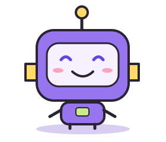

UMUT ALISOGLU’S LITTLE CORNER OF THE INTERNET
Useful tools.
Playful projects.
Sort a PDF. Shrink a video. Make something click.
A collection of practical tools and curious experiments, with a little personality built in.
FREE BROWSER TOOLS. NO ACCOUNT. YOUR FILES STAY YOURS.
BIG RELIEF.

I can makean app for that.
AI: “Define ‘one’.”
LESS FRICTION / MORE FINISHED
What needs doing?
PDF organizer
Preview, reorder & rotate
Open tool 02Image studio
Convert, resize & batch
Open tool 03Video compressor
A smaller MP4
Open tool 04Excel → PDF
Tables ready to share
Open toolPowered by FileForge. Processing happens on your device. See how →
BUILT FROM “WOULDN’T IT BE HANDY IF…”
Small ideas. Real projects.
A SMALL DETOUR / THE IDEA MACHINE
An annoyance today.
An app idea tomorrow.
Got a task that makes you sigh dramatically? Turn it into a starting prompt. Or let the idea machine pick one.
This little workshop writes a prompt in your browser. Take it to your AI tool of choice for the actual building.
No account. No upload. Just a tiny nudge toward the next useful thing.
THE HUMAN BEHIND THE BUTTONS
Hi, I’m Umut.
I like making things useful.
This is where my practical ideas and playful experiments get a home. Some become browser tools, some become desktop apps, and some are still finding their feet.
AI helps with much of the code. I choose the direction, try things out and keep improving the results. The project pages explain what works today and where the limits are.
Found a bug? Have an idea? Say hello ↗